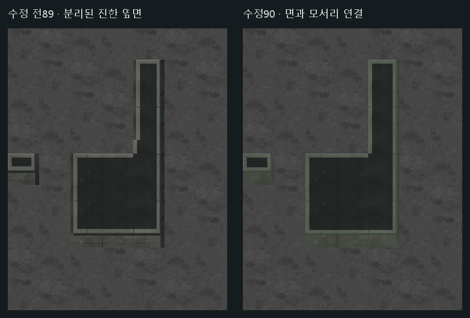

<!doctype html><html lang="ko"><meta charset="utf-8"><meta name="viewport" content="width=device-width,initial-scale=1">
<title>잔향도시 콘크리트 벽 · 옆면과 모서리 정리</title>
<style>
*{box-sizing:border-box}body{margin:0;background:#141b1f;color:#e0e8e3;font:15px/1.6 system-ui}main{max-width:1480px;margin:auto;padding:20px}h1{font-size:25px;margin:0 0 5px}p{color:#b2c0b8;margin:5px 0 10px}nav{display:flex;gap:7px;flex-wrap:wrap;margin:10px 0}button,a,select{font:inherit;background:#273a34;color:#e1e9e1;border:1px solid #61786b;padding:7px 12px;text-decoration:none;cursor:pointer}button[aria-pressed=true]{background:#4c6755;border-color:#c0cba6}select{max-width:100%}.split{margin-left:auto}canvas{display:block;width:100%;background:#101719;border:1px solid #52625a;outline:none;image-rendering:pixelated;touch-action:none;cursor:grab}canvas:active{cursor:grabbing}#status{padding-top:8px;color:#d0d3b6;font-size:14px}.meta{font-size:13px;color:#9fb0a4}footer{margin-top:16px;font-size:13px;color:#aab9ae}details{margin-top:12px}summary{cursor:pointer;color:#c0d0be}.material{display:block;max-width:100%;height:auto;image-rendering:pixelated;margin-top:10px}@media(max-width:650px){main{padding:13px}h1{font-size:22px}.split{margin-left:0}button,a,select{padding:7px 9px;font-size:14px}}
</style><main>
<h1>잔향도시 콘크리트 벽 · 옆면과 모서리 정리</h1>
<p>오른쪽의 진한 띠는 옆면이었습니다. 대비와 폭을 줄이고, 아래 앞면과 사선으로 이어지게 다듬었습니다.</p>
<nav aria-label="벽 마감 비교"><button data-style="concrete90" aria-pressed="true">마감 수정90</button><button data-style="concrete89" aria-pressed="false">수정 전89</button><button data-style="original84" aria-pressed="false">기존 도시벽84</button><span class="split"><label for="sample">지도 </label><select id="sample" aria-label="전체 지도 선택"><option value="0">비교하던 지도 ·802302584</option><option value="1">다른 랜덤 지도 ·920819314</option></select></span></nav>
<nav aria-label="지도 확대"><button data-mode="fit" aria-pressed="true">전체 지도</button><button data-mode="actual" aria-pressed="false">원본 크기</button><button data-mode="double" aria-pressed="false">2배 확대</button><button id="corner">문제의 모서리 확대</button><a id="fullImage" href="802302584-concrete90.png" target="_blank">전체 이미지 열기</a><a href="../city-concrete89/">앞선89 전체 지도</a></nav>
<canvas id="map" tabindex="0" aria-label="모서리를 정리한 잔향도시 콘크리트 벽 지도"></canvas>
<div id="status" role="status">지도를 불러오는 중…</div><p class="meta" id="meta"></p>
<details><summary>문제의 벽 · 수정 전후 나란히 보기</summary></details>
<footer>기존 두 지도에 적용한 마감 수정 시안입니다. 같은 위치에서 수정 전후를 전환해 비교할 수 있습니다.</footer>
</main><script src="viewer90.js"></script></html>
